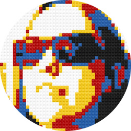

Participating cities
Interested to know if World IA Day will be in your town? Want to help city leaders with organizing? Check out all our lovely cities and leaders below.
- Addis Abeba, Ethiopia
- Seminas Hadera
- Austin, Texas, United States
- Adam Kecskes
- Barcelona, Spain
- Arantxa
- Bari, Italy
- Nino Lopez
- Bristol, United Kingdom
- Simon Norris
- Chicago, Illinois, United States
- Trent Sherrell
- Copenhagen, Denmark
- Morten Skat Fogh Christiansen
- Denver, Colorado, United States
- Clayton Dewey
- Depok, Indonesia
- Wiwit Ratnasari
- Des Moines, Iowa, United States
- Scott Kubie
- Dubai, United Arab Emirates
- Katral-Nada Hassan
- Ghent, Belgium
- Mieke van Alphen
- Istanbul, Turkey
- MUSTAFA DALCI
- Johannesburg, South Africa
- Jason Hobbs
- Jönköping, Sweden
- Torben Schmitt
- Kampala, Uganda
- Kizito Katawonga
- Kent, Ohio, United States
- Carrianne Tuckley
- Lansing, Michigan, United States
- Rachael Hodder
- Ljubljana, Slovenia
- Marko Mrdjenovič
- Los Angeles, California, United States
- Weston Thompson
- Lyon, France
- Guillaume Roussel
- Mendoza, Argentina
- Eugenio Monforte
- Miami, Florida, United States
- Alberto Cairo
- Milwaukee, Wisconsin, United States
- Joe Elmendorf
- Nairobi, Kenya
- Mark Kamau
- New York, New York, United States
- Carl Collins
- Ottawa, Canada
- Therese Kirrane
- Pescara, Italy
- Manuele Forcucci
- Philadelphia, Pennsylvania, USA
- Victor Yocco
- Phoenix, Arizona, United States
- Erin Miller
- Prague, Czech Republic
- Artur Muller
- Saint Petersburg, Russia
- Yury Solonitsyn
- San José, Costa Rica
- José René Gutiérrez Álvarez
- São Paulo, Brazil
- Carolina Leslie
- Shenzhen, China
- zhu chen
- Singapore
- Maish Nichani
- Stockholm, Sweden
- Stefano Oliva
- Tampa, Florida, United States
- Amy Espinosa
- Tehran, Iran
- Kaveh Bazargan
- Washington, DC, United States
- Lisa (Seaman) Covino
- Wellington, New Zealand
- Matt Mayfield
- Dallas, Texas, United States
- Cone Johnson


About 2016
Each year, World IA Day has been a bit different. Different cities, different speakers—different brand colors.
And this year is no different. We’re changing. We’re turning five! We’re growing up. And we hope to do that together.
We’ve been taking a look at last year’s feedback and taking time to understand changes that would be both viable and appropriate for this year’s event. With that in mind, we thought we’d share a few of the conversations going on internally:
- Regarding the brand… Historically, World IA Day’s color (and, in a sense, brand) has changed every year. This year, after consulting with a number of Creative Directors, we have decided to maintain the hard work put forth by Michelle Chin.
- Regarding “Paid” events…
About the next steps
The IAI global team has been working hard to make sure World IA Day events are connected, successful, and sustainable.
To this extent, we’ve codified a set of guidelines that we believe will help us champion the sharing of ideas, information, and research. We’d love to hear your feedback as we continue to use them to globalize our event to new and exciting regions.
- World IA Day celebrates information architecture. We aim to advance the practice and education of information architecture.
- World IA Day allows autonomy. We enable local leaders to make their own culturally relevant decisions.
- World IA Day encourages economic inclusion. We strive for events to be affordable and accessible to all.
- World IA Day promotes equality. We advocate a welcoming environment at each event.
- World IA Day values sustainability. We have a vested interest in seeing this event grow globally year over year.
About the World IA Day Global Team
World IA Day is completely volunteer-run, with operational support from the Information Architecture Institute.
This year, World IA Day is jointly produced by a network of global and regional volunteers, with support from the IAI Board and President, who are here to help local organizers in their World IA Day journey.
Regions were primarily created based off of city numbers and time zone convenience, to help on-board areas where more cities are holding World IA day events. We believe in growing together.
A look at the team:
-

Abby Covert
President of IAI -

Carolina Leslie
Regional Director, South America -
Clementina Gentile
Regional Director, Europe -

David Peter Simon
Global Executive Producer -

Erin Stratos
Events Director -

Kamaria Campbell
Regional Director, US Midwest & West Coast -

Samantha Raddatz
Regional Director, US East Coast